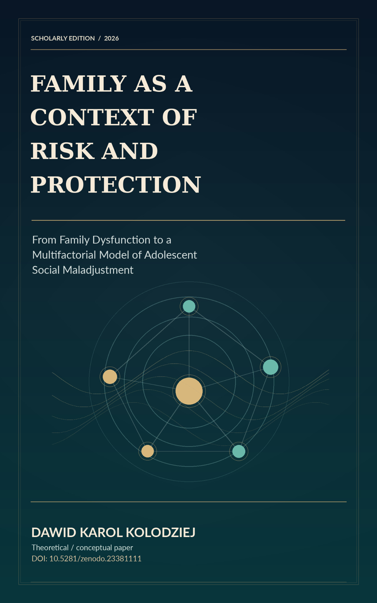
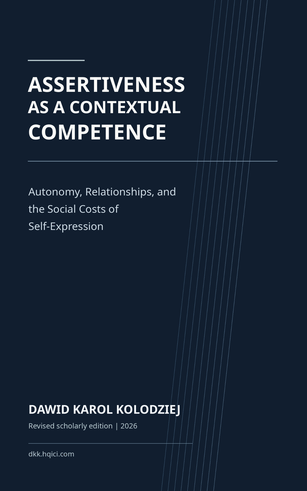

ARTYKUŁY · BADANIA · KSIĄŻKI
Badania.
Publikacje.
Zbiór artykułów, opracowań badawczych, working papers, książek i tekstów edukacyjnych. Otwórz publikację, aby poznać jej kontekst, źródło i dostępne wydania.
Przeglądaj kolekcję 01 / 02
PEŁNE ARCHIWUM / INDEKS 001
Odkryj
publikacje.
06PUBLIKACJE
Od diagnozy do konceptualizacji przypadku
Integracja informacji diagnostycznych w kontekstowym rozumowaniu klinicznym

Od deficytów do potrzeb wsparcia
Od opisu trudności do funkcjonowania i praktycznego wsparcia
Od przypadku do hipotezy diagnostycznej
Rozumowanie diagnostyczne, interpretacja i osąd specjalisty

Rodzina, ryzyko i ochrona
Procesy rodzinne i wieloczynnikowe ujęcie rozwoju młodzieży

Asertywność jako kompetencja kontekstowa
Working paper o asertywności, relacjach i autonomii
Autorytet bez autorytaryzmu
Working paper o autorytecie wychowawczym i uzasadnionym wpływie
Brak pasujących publikacji. Zmień wyszukiwanie.
Niezależna kolekcja, aktualizowana wraz z kolejnymi publikacjami.
Biblioteki cyfrowe
Biblioteki cyfrowe
Przeglądaj publikacje w bibliotekach autora i repozytorium Zenodo.